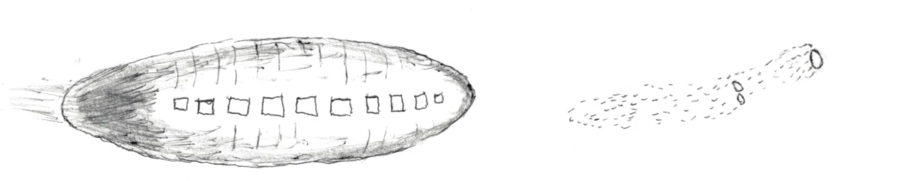
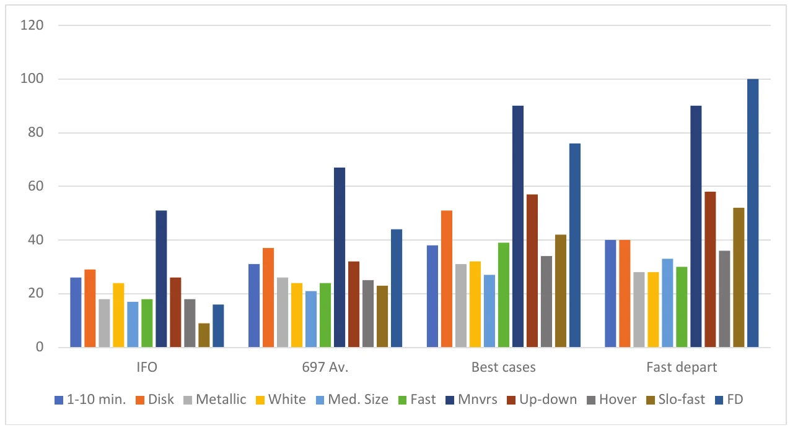

Les signalements d'ovnis de faible comme de haute étrangeté reposent sur des récits de témoins, mais cette preuve anecdotique n'a guère de crédibilité scientifique. De la perception à la conception, au souvenir et à la communication, chaque étape de la carrière d'une expérience d'ovni est exposée à des risques de distorsions et d'altérations, comme l'illustrent la rentrée de Zond IV en et les lumières de Phoenix en . Les récits d'enlèvements subissent des distorsions pires encore. Pourtant, la plupart des témoignages oculaires restent proches de la vérité, ou préservent au moins les faits de base, même quand l'observateur se méprend sur leur nature. Un échantillon test de cas inexpliqués de haute qualité, recueillis auprès de témoins « d'élite » formés et expérimentés, révèle une cohérence qui suggère un phénomène anormal unique pour source.
Le premier, le principal et le fondamental instrument d'observation des ovnis est le témoin humain. Caméras et radars peuvent aider, d'autres témoins peuvent corroborer, mais c'est en général sur celui qui a vécu l'expérience que repose la charge de décrire ce qui s'est passé, et d'attester au monde que quelque chose d'inhabituel s'est bel et bien produit. Sans ces récits de témoins, il ne resterait aucune autre trace, personne ne saurait qu'une chose telle que les ovnis existe. Donc, pas de pression, n'est-ce pas ?
De profondes divergences opposent les jugements sur la valeur réelle du témoin. À première vue, s'en remettre à des observateurs humains semble une raison de se réjouir. Nous sommes tous ces instruments, nous savons nous en servir, nous leur faisons confiance, nous en sommes fiers. Dans la pensée courante, si nous l'avons vu se produire, c'est que cela s'est vraiment produit. Entendre un témoin de sa propre bouche, c'est s'approcher des événements réels autant qu'il est humainement possible sans avoir partagé soi-même l'expérience. Devant un tribunal, le ouï-dire ne suffit pas et seul le témoignage oculaire compte comme le plus susceptible d'être véridique et digne de foi. Quand des témoins déclarent avoir vu des ovnis, même ces expériences bénéficient d'un certain bénéfice du doute, parce que ceux qui parlent ont qualité de sources de première main.
D'un autre côté, un contre-courant de données défavorables érode cette confiance. Tous les humains, nous compris, que nous l'admettions ou non, ne sont ni impartiaux ni infaillibles. Le témoin peut s'efforcer d'être véridique, mais sur le chemin qui mène de l'événement observable au récit communiqué, la version finale de l'histoire peut perdre, et perdra souvent, sa fidélité à ce qui s'est produit au départ.
Pour citer un exemple classique de tout ce qui peut mal tourner, considérons un spectacle céleste du soir du . L'Union soviétique lança ce jour-là sa sonde lunaire Zond IV, mais celle-ci retomba dans l'atmosphère au-dessus du centre des États-Unis et se brisa en plusieurs morceaux qui se consumèrent à une centaine de milles au-dessus de la Terre. Soixante-dix-huit témoins signalèrent leurs observations à l'Armée de l'air. Il n'y avait aucun doute sur l'heure et le lieu de l'incident, aucun doute sur ce que ces témoins avaient vu . C'est la façon dont ils l'ont vu qui rend l'histoire intéressante.

La plupart des témoins donnèrent des descriptions fidèles d'un amas allongé d'étincelles scintillantes qui
traversait le ciel en silence, d'un mouvement rectiligne et uniforme. Certains identifièrent même les lumières comme
des météores ou des rentrées de satellite. Plusieurs témoins employèrent un terme
trompeur comme « formation », laissant entendre que les lumières se déplaçaient sous un contrôle organisé, alors
qu'ils voulaient sans doute dire que des lumières indépendantes suivaient la même trajectoire, mais ne connaissaient
pas de termes plus précis pour le dire. Dans ces observations comme dans beaucoup d'autres, les sous-estimations de
l'altitude et les surestimations de la taille étaient
monnaie courante. Mais quelques signalements déformèrent les événements au point de les rendre presque
méconnaissables. Dans l'un d'eux, une lumière semblable à une étoile, à peine à un millier de pieds de haut,
grossit rapidement en s'approchant. Il avait la forme d'un gros cigare… la taille d'un de nos plus grands
fuselages d'avion
et était construit de nombreux morceaux de feuilles plates d'un matériau semblable à du
métal, avec un aspect « riveté ».
Il semblait avoir des hublots de forme carrée sur le côté….
Les
hublots paraissaient éclairés de l'intérieur, et le fuselage émettait une traînée de feu. Un autre témoin dit qu'un
long objet, comme un avion à réaction sans ailes, passa en trombe à hauteur de la cime des arbres. Il avait de
nombreux hublots et semblait en feu à l'avant et à l'arrière Project Blue Book: “Northeastern U.
S.” [], pp. 145, 113, fold3.com, accessed .
Un même moment, un même lieu et une même position dans le ciel plaident pour que la rentrée de Zond ait été le seul stimulus visuel, et pour que l'esprit de quelques témoins ait transformé des fragments en combustion en hublots sur un corps solide assez proche pour qu'on en voie les plaques de métal inexistantes. On ne peut échapper à cette dure vérité : les témoins oculaires sont capables d'erreurs extrêmes, en contradiction avec les événements réels et avec les autres observateurs. Cet instrument d'observation humain « idéal » peut altérer les faits de base jusqu'à ce que le résultat soit largement imaginaire et, sans connaissance indépendante de la vraie nature d'un événement, personne ne pourrait peut-être jamais distinguer le vrai du faux.
La faillibilité des témoins oculaires n'étonne ni les psychologues ni les spécialistes des sciences sociales. De nombreuses recherches démontrent que les témoins de crimes et d'accidents sont souvent peu fiables, que le souvenir des victimes est altéré par l'excitation et la peur. Les témoins peuvent mentir et commettre des erreurs de bonne foi ; ils sont sujets à des préjugés, des désirs, des attentes et des exigences qui refaçonnent l'expérience en une vérité personnelle pouvant différer considérablement de la vérité historique. En raison de cette plasticité, les scientifiques sceptiques rejettent les signalements d'ovnis qui ne reposent que sur un témoignage anecdotique, comme dénués de valeur scientifique et ne méritant que le mépris dont ils accablent le sujet.
Un tel rejet en bloc d'observations soigneuses par des observateurs honnêtes peut faire passer les scientifiques pour arrogants, mais leurs doutes ont un fondement solide. La vérité d'un événement vécu doit passer par un redoutable défilé de forces qui s'en prennent à son intégrité, réécrivent ses faits et la contraignent à se conformer aux préférences personnelles et sociales. La liste de ces assaillants est longue.
L'événement est ce qui s'est réellement passé, l'arbre qui est tombé dans la forêt, que quelqu'un l'ait entendu tomber ou non, l'ovni qui a survolé le quartier pendant que les témoins dormaient dans leur lit. Avoir connaissance d'un événement exige une preuve : un arbre abattu, les images d'une caméra de surveillance, ou un témoin. Un observateur n'accède pas à la vérité de l'événement, seulement à une expérience de celui-ci. Sa nature peut être connue, comme la rentrée de Zond, ou déduite, si la position de Vénus correspond dans le temps et l'espace à un signalement d'ovni ; mais souvent, nous n'avons pour travailler que ce que le témoin nous dit, et un témoin ne peut relater que l'expérience, une version personnelle au rapport imparfait avec la vérité.
Des événements trompeurs surprennent le témoin qui ne se doute de rien quand des spectacles rares, comme un gros météore ou la rentrée d'un satellite, surgissent dans son champ de vision. Le témoin pourrait reconnaître un ballon, un mirage, une murmuration d'étourneaux ou un projecteur sur les nuages dans une circonstance, mais n'y voir qu'un mystère dans une autre. Une montgolfière miniature la nuit, un météore brillant vu de face ou un avion publicitaire sous un angle inhabituel peuvent paraître fort étranges, tout comme un spectacle familier, tel les feux de navigation d'un avion de ligne, pour des yeux réceptifs. Vénus a suscité maintes et maintes fois des erreurs d'identification quand elle brille exceptionnellement, qu'elle passe entre les nuages, ou qu'elle comble les attentes en tant que phare d'un aéronef ou ovni. Quand plus d'un stimulus traverse le champ de vision, une propension à relier ce qui n'est pas lié pose au témoin un problème plus déroutant encore. L'orientation perceptive, la situation physique et mentale dans laquelle on se trouve quand on est amené à observer, peut faire toute la différence entre reconnaissance et perplexité.
Quand l'œil joue des tours, des ovnis peuvent en résulter. L'autocinèse désigne les mouvements illusoires d'objets immobiles, comme une étoile ou une planète, vus sur un ciel sombre. Un effet de contraste se produit quand une lumière vive semble assombrir le fond qui l'entoure et atténue ou fait disparaître les étoiles, comme si une masse à peine visible les éclipsait. Quand l'œil relie des objets séparés en une seule forme perçue, il en résulte une illusion de contour. Pour plusieurs lumières séparées dans la nuit, illusion de contour et effets de contraste peuvent se combiner pour créer l'apparence d'un corps sombre portant des lumières. Un faiseur d'illusions plus complexe est la paréidolie, tendance à voir dans des formes aléatoires des objets signifiants, comme des visages dans les nuages ou l'Homme dans la Lune. Dans ces cas, la perception est vraie telle qu'elle est vue, et pourtant trompeuse.
La capacité de relier un stimulus perçu à des phénomènes connus, et ainsi de l'identifier, est une faculté
séduisante mais sujette à l'erreur chez le témoin. Une perception en
elle-même, ce sont des énergies extérieures qui frappent les systèmes sensoriels humains. L'étroite collaboration
entre les sens et les capacités conceptuelles donne forme et sens à ce que William
James décrivait comme la blooming, buzzing confusion
(« confusion florissante et
bourdonnante ») de la perception brute James, William: The Principles of
Psychology, , p. 488, Classics in the History of Psychology,
accessed . Une grande partie de cette connexion se fait sans
prise de conscience ni effort, comme la reconnaissance d'une ligne ou d'un cercle, ou la distinction entre un chat
et un chien. En terrain familier, perception et conception travaillent ensemble avec efficacité et fiabilité pour
associer une rencontre sensorielle à une catégorie conceptuelle adéquate, mais les expériences extraordinaires
forcent les facultés conceptuelles à trouver une case pour des perceptions inconnues et ambiguës.
Confronté à un spectacle littéralement non identifié, un témoin peut entreprendre le processus d'escalade des hypothèses que J. Allen Hynek appliquait aux ovnis Hynek, J. Allen: The UFO Experience: A Scientific Inquiry, Chicago, Henry Regnery, , p. 13. La délibération commence par les solutions conventionnelles courantes, puis, si elles échouent, s'élargit à des options plus exotiques et, en dernier recours, admet un véritable inconnu, un vrai ovni. Il arrive que le témoin ait déjà un concept en tête. En , l'attente d'une machine volante réussie conduisit des témoins à voir Vénus et des montgolfières miniatures comme les feux du dirigeable de quelque inventeur, tandis que le nom de « soucoupe volante » suggéra une forme pour de nombreux signalements, que les objets correspondent réellement ou non à cette description.
L'effort pour donner un sens à une observation est un désir naturel, que sert au mieux une réflexion rétrospective une fois les faits de base établis, mais c'est une source d'erreur toute trouvée dans le processus d'observation lui-même. Les influences conceptuelles s'immiscent dans l'observation dès le départ. Elles peuvent être inconscientes à ce stade, avoir pour source une croyance établie, une idée culturelle familière ou une conjecture hypothétique, mais une possibilité qui semble juste au moment de l'expérience se durcit ensuite en vérité acquise qui ferme la porte à d'autres possibilités. Une orientation conceptuelle, une fois fixée dans l'esprit, devient une force puissante qui modèle les observations à son image. Elle peut rendre étrange l'ordinaire ou banaliser l'extraordinaire, et aussi imposer des exigences que le témoin doit suivre par souci de cohérence, déterminant une sorte de biais de confirmation qui privilégie les données d'observation favorables et néglige ce qui ne cadre pas, ou le révise pour que cela cadre. Des concepts erronés imposent ce qui est censé se produire à l'observation de ce qui s'est produit, et corrompent les faits mêmes d'une expérience.
À l'instant où un événement passe, Dieu seul sait ce qui s'est vraiment passé. Tout ce qu'a le témoin, c'est un souvenir. Les événements mémorisés ne se rangent pas comme des photographies et ne se rejouent pas comme une cassette vidéo mentale, mais, selon les chercheurs, reviennent à la conscience par un processus actif de reconstruction qui mêle faits, concepts et interprétations pour créer une version de l'expérience telle que le témoin la connaît, et non telle que l'événement a réellement été. Certains faits sont oubliés, des pseudo-faits ajoutés, et tous les souvenirs structurés selon des exigences conceptuelles, par des processus dont la vérité ne sort pas indemne Bartlett, Frederic C.: Remembering: A Study in Experimental and Social Psychology, , London, Cambridge University Press, , p. 213 Loftus, Elizabeth F.: Memory, Surprising New Insights Into How We Remember and Why We Forget, Reading (Mass.), Addison-Wesley Pub. Co., , pp. 66-76. Un souvenir récent est peut-être le plus proche de la vérité, mais il n'est jamais achevé. Les modifications se poursuivent à mesure que les réflexions après coup, les nouvelles informations et les pressions sociales interagissent avec les matériaux de la mémoire pour créer une version nouvelle à certains égards. Parfois, la création est littéralement nouvelle : un faux souvenir d'événements qui n'ont jamais eu lieu, ou si déformés qu'ils ne ressemblent plus à l'événement d'origine. Les variations de la mémoire peuvent être grandes ou petites, mais même les « souvenirs flash » laissés par le jour de l'assassinat de John Kennedy ou de la catastrophe de Challenger ne sont pas à l'abri de changements quand on se les remémore Loftus, Elizabeth F. & Ketcham, Katherine: The Myth of Repressed Memory: False Memories and Allegations of Sexual Abuse, New York, St. Martin’s Press, , pp. 94-100 Ofshe, Richard & Watters, Ethan: Making Monsters: False Memories, Psychotherapy, and Sexual Hysteria, New York, Charles Scribner’s, , pp. 35-44. Les variantes peuvent graviter autour d'un noyau de vérité, mais toujours à une certaine distance.
Les efforts pour comprendre et interpréter une expérience anormale commencent à la volée, dans l'excitation et l'incertitude de l'expérience elle-même. Les décisions prises sur le moment quant à ce qui se passe et pourquoi contribuent à façonner la manière dont le témoin se souvient de l'expérience, mais le témoin a l'occasion de revoir les faits plus tard, de remettre en question ses premières impressions à tête reposée. Pourtant, les faits dont il se souvient ne sont plus historiques mais personnels, enchevêtrés avec les concepts, les croyances et les motivations du témoin. L'interprétation et la compréhension d'un souvenir déterminent son avenir : réalisez que vous avez vu Vénus, et l'expérience ne vaut peut-être pas d'être mentionnée, ou pire, ne doit pas l'être parce que vous risquez d'avoir l'air ridicule ; mais si vous avez vu un ovni, vous pourriez avoir une belle histoire. Ce n'est pas la vérité seule, mais d'autres usages et intérêts qui orientent le destin du souvenir.
Tôt ou tard, la plupart des témoins d'événements inhabituels veulent raconter leur histoire. Il leur faut d'abord avoir une histoire à raconter, et cela demande plus qu'une récitation de faits. L'aspirant narrateur doit verbaliser des souvenirs personnels en un récit au moins compréhensible et au mieux divertissant. Une expérience intrinsèquement étrange multiplie les difficultés. Les mots devraient dépeindre les événements, mais les insuffisances du vocabulaire peuvent en transmettre une image inexacte. L'histoire doit ordonner les événements en une séquence signifiante, même si le narrateur doit improviser ou interpréter pour compenser des parties inexplicables et sa propre confusion. Certains détails se perdent ou sont déformés au passage, d'autres sont ajoutés par souci de clarté, d'autres encore pour étayer les opinions et la compréhension du narrateur, pour convenir à sa personnalité, voire pour projeter une image de soi souhaitée.
Les débuts d'une histoire sur la scène publique transforment une expérience privée en propriété collective. Pour en arriver là, elle s'est conformée à des exigences narratives et sociales et a sacrifié une part de son authenticité à l'intelligibilité et à l'attrait. Passé ce seuil, une expérience personnelle commence une nouvelle vie comme information de seconde main. Une fois racontée, l'histoire devient un objet que les auditeurs reçoivent, digèrent et racontent à leur tour à leur manière, selon leurs propres idées, hors du contrôle du témoin et sans l'expérience du témoin oculaire comme point de référence ultime. Les mots prendront des nuances de sens différentes, les événements décrits des compréhensions différentes, et les interprétations attribuées des degrés de crédibilité différents pour chaque destinataire.
Les changements que subit un récit en passant de personne en personne ont suscité l'intérêt des psychologues, des sociologues et des folkloristes. Les expériences sur la transmission des histoires identifient des processus de sélection : le nivellement, par lequel les détails moins importants s'estompent ; l'accentuation, par laquelle les narrateurs choisissent de mettre en avant des détails importants, frappants ou intéressants ; et l'assimilation, choix et changements qui façonnent l'histoire selon les croyances, les attentes, les intérêts et les objectifs de l'auditeur. Les pressions sociales pèsent sur le narrateur pour qu'il respecte les normes, et sur l'auditoire pour qu'il les fasse respecter. Il en résulte une histoire plus courte et plus resserrée, qui met l'accent sur les aspects dramatiques et émotionnellement prenants, et rationalise les contenus inconnus ou déroutants. Le gain en satisfaction et en attrait se paie d'une perte de fidélité à la source. Chaque destinataire accueille une histoire avec approbation, enthousiasme, critique ou doute, et, à moins que sa réaction ne soit le désintérêt, la transmet ensuite à d'autres personnes réceptives. Ces personnes aux vues similaires forment un canal de transmission qui préserve et propage leur version favorite, enrichie de discussions, de disputes et d'adaptations aux besoins personnels et collectifs. La vérité de l'histoire en vient à dépendre moins de l'expérience du témoin que des préférences partagées des diverses factions qui entretiennent les versions de l'histoire qu'elles ont choisies Allport, Gordon W. & Postman, Leo: The Psychology of Rumor, New York, Henry Holt and Company, , pp. 75, 86, 99-100 Bartlett, F. C.: “Some Experiments of the Reproduction of Folk Stories”, Folklore 31 (), pp. 30-47, reprinted in Dundes, Alan (ed.): The Study of Folklore, Englewood Cliffs (N.J.), Prentice-Hall, , pp. 243-258.
Une partie de l'auditoire ne se contente pas d'écouter, mais consigne l'histoire sous forme écrite ou audiovisuelle. Cette trace conserve l'histoire à un moment de son histoire et demeure une référence que les lecteurs peuvent consulter pour, idéalement, avoir des faits exacts. Si un texte figé bride quelque peu la liberté d'improviser, il diffuse aussi une version compromise avant même d'avoir été mise par écrit. Les novices qui cherchent à s'instruire peuvent croire que n'importe quel livre ou site web sur les ovnis présente l'histoire officielle d'un cas, mais ces sources varient beaucoup en fiabilité, et leurs auteurs agissent rarement en historiens désintéressés. Les journalistes peuvent n'avoir d'autre objectif que de rapporter des événements dignes d'intérêt, même s'ils peuvent rendre les histoires d'ovnis sensationnelles pour divertir. Les meilleurs chercheurs sur les ovnis et les enquêteurs sceptiques peuvent creuser l'histoire, voire interroger la source, dans des efforts honnêtes pour retrouver les faits, même s'ils peuvent eux aussi écouter avec des intentions partiales. Une grande partie de la littérature sur les ovnis a moins à voir avec la recherche de la vérité qu'avec la promotion d'intérêts particuliers, les auteurs étant aveugles à toute preuve autre que favorable, voire déterminés à orienter l'histoire pour qu'elle serve leurs croyances et celles de leur public. Lecteur, prends garde : ce n'est pas parce que tu l'as lu dans un livre que c'est parole d'évangile.
Les multiples canaux actuels de communication de masse (édition, télévision, Internet et réseaux sociaux) offrent une tribune aux influenceurs pour promouvoir les images, les attentes et les compréhensions qu'ils ont choisies. Ces canaux donnent une voix puissante aux auteurs populaires et aux personnalités médiatiques. Ces gens acquièrent une notoriété, des fidèles, une aura d'autorité et d'expertise ; leurs versions et leurs opinions pèsent d'un poids disproportionné auprès d'un public de millions de personnes. Les médias modernes ouvrent un cyber-forum où les participants partagent expériences et fantasmes, discutent de croyances et débattent d'idées ; ils enferment aussi les participants dans une chambre d'écho, pour les persuader ou les pousser à se conformer aux croyances du groupe et à exclure les points de vue différents. Qui a même besoin du Wi-Fi pour se connecter à l'influence des ovnis ? Leurs mèmes ont imprégné la culture populaire, qui en a une conscience quasi universelle, beaucoup provenant de films et de séries télévisées dont certaines histoires sont entièrement fictives et d'autres fondées sur des faits mais en partie romancées, comme les cas de la série Project Blue Book de la chaîne History Channel. Les expériences d'ovnis ont façonné la culture moderne. En retour, un scénario culturel s'est logé dans nos têtes pour nous préparer, si jamais nous vivions une expérience d'ovni, avec des manières préconfigurées de le voir, d'y penser et d'en parler.
Les périls qui guettent un signalement d'ovni sont d'une lecture ennuyeuse dans l'abstrait, mais ils prennent vie quand on en voit les conséquences à l'œuvre, et il n'en est pas d'exemple plus frappant que les lumières de Phoenix du . Présentée comme la plus grande observation de masse de tous les temps, jusqu'à dix mille témoins, dont le gouverneur de l'Arizona, virent un ovni énorme traverser ce soir-là le corridor central très peuplé de l'État. Ou était-ce deux ovnis, ou cinq, ou plus ? Un chœur de nombreux témoins aboutit à une cacophonie riche d'enseignements sur les faiblesses du témoignage oculaire Bullard, Thomas E.: “Skeptical Successes and Ufological Failures: Opportunities in Uncomfortable Places”, cufos.org, pp. 9-15, accessed .
Une nuit chaude et claire attira les habitants de l'Arizona à l'extérieur, beaucoup pour regarder la comète Hale-Bopp, alors bien visible dans le ciel. Juste après , un groupe triangulaire de cinq lumières passa au-dessus de Prescott (Arizona), puis obliqua vers le sud en direction de Phoenix (Arizona), à quelque 120-130 km. Alors que les lumières quittaient Prescott, Tim Ley, habitant de Phoenix, et sa famille repérèrent cinq lumières semblables à des étoiles qui flottaient bas au nord-ouest, grossissant et s'écartant en une configuration en « V » à mesure qu'elles approchaient. Ley soupçonna des hélicoptères militaires, mais les lumières conservaient une disposition trop parfaite pour des appareils séparés. En quelques minutes, alors que les lumières étaient à moins de 2 km, il vit qu'un corps sombre en forme de V portait les lumières blanches, une à la pointe et deux sur chaque bras. Une lumière sembla un instant se dédoubler. Les bords nets de l'objet se découpaient sur les étoiles tandis qu'il passait juste au-dessus de lui, silencieux bien qu'à 30 m seulement de hauteur, à la vitesse tranquille de 50 km/h. Et il était énorme : chaque bras mesurait 210 m de long, si large qu'il dut tourner la tête d'un côté à l'autre pour l'embrasser en entier. Il passa au-dessus de la ville et disparut à la vue dans la brume et les lumières après plus de 15 minutes d'observation.
Des confirmations vinrent de nombreux témoins indépendants. Le gouverneur décrivit un engin massif, silencieux, en forme de delta, avec des lumières encastrées dans son bord d'attaque. Des témoins de tout Phoenix et de ses banlieues évoquèrent avec émerveillement un boomerang noir de 1,6 km de large, doté de cinq lumières. Il y avait aussi des différences : augmentations et diminutions du nombre de lumières, quelques formes de losange ou de rectangle. Un récit décrivait un disque de 1,6 km de large qui reflétait les lumières du sol sur son ventre, un autre racontait qu'un triangle noir de 3,2 km de large, doté de dizaines de lumières et de silhouettes de figures humaines aux hublots, était passé bas au-dessus de sa tête. Les versions divergentes les plus persistantes niaient toute structure de liaison, les témoins insistant sur le fait que les lumières étaient indépendantes, ce que certains virent confirmé quand ils virent une lumière quitter la formation, se laisser distancer, puis la rattraper.
Les observations durèrent jusque vers . Les nouvelles locales des événements tombèrent presque aussitôt, si bien que beaucoup de gens étaient aux aguets à 10 heures quand survint un second événement ovni. Une ligne courbe de neuf lumières vives apparut soudain au sud-ouest et resta suspendue bas dans le ciel avant que les lumières ne s'éteignent une à une. Alors qu'une seule vidéo enregistra l'ovni de 8 heures, plusieurs témoins filmèrent l'événement de 10 heures, qui passa ensuite à la télévision nationale avec des images spectaculaires devenues synonymes des lumières de Phoenix. L'expérience marqua profondément la mémoire des témoins. Beaucoup s'arc-boutèrent contre les efforts pour banaliser l'événement, certains pensèrent qu'il était extraterrestre, d'autres le considérèrent comme une expérience qui avait changé leur vie, voire spirituelle.
Les ufologues acceptèrent d'abord tous les signalements de cette nuit comme faisant partie d'une invasion unique de Phoenix, et interprétèrent les différentes descriptions comme la preuve que sept types d'ovnis avaient convergé sur la ville. Une réflexion ultérieure réduisit le champ à deux événements, le grand engin triangulaire à 8 heures et l'arc de lumières à 10 heures. Ufologues comme sceptiques constatèrent que les lumières de 10 heures provenaient de la direction d'un terrain d'essais militaire et, après des démentis initiaux, l'Armée de l'air reconnut que des avions de la Garde nationale avaient largué des fusées éclairantes inutilisées à cet endroit et à ce moment. Certains sceptiques conclurent que des fusées éclairantes expliquaient tous les événements, ce qui provoqua une indignation générale chez les témoins et une théorie du complot selon laquelle des avions de l'Armée de l'air avaient largué les fusées éclairantes dans une tentative calculée de discréditer les observations d'ovnis.
Des irréductibles continuèrent de croire que les lumières de 10 heures étaient des ovnis, mais l'attention se porta sur les observations antérieures comme véritable mystère des lumières de Phoenix. L'Armée de l'air écarta l'événement comme une formation d'avions, mais la plupart des partisans des ovnis serrèrent les rangs autour du récit palpitant d'un vaisseau spatial géant en forme de V au-dessus d'une grande ville. Mais le journaliste local Tony Ortega soutint l'explication de l'Armée de l'air, citant un astronome amateur dont le télescope avait révélé les lumières fixées à des avions, et plusieurs témoins ayant une expérience militaire et aéronautique qui confirmèrent cette identification. De simples calculs du temps de vol de Prescott à Phoenix donnèrent une vitesse de 480-640 km/h pour les lumières, autrement dit, la vitesse de croisière typique de jets. Une solution conventionnelle pour les observations de 8 heures est extrêmement convaincante : cinq avions militaires volaient en formation en V à 6 100 mètres, leurs phares d'atterrissage allumés, entre Prescott et Phoenix, peut-être un peu au-delà. Nous savons ce qu'étaient les lumières, même si les témoins ne le savaient pas. Nous savons ce qu'ils ont vu, ce qu'ils pouvaient et ne pouvaient pas voir. L'auteur a rassemblé 128 récits publiés pour étudier les différences entre les témoins et leurs signalements, et fonde les résultats suivants sur cet échantillon Bullard, Thomas E.: “Skeptical Successes and Ufological Failures: Opportunities in Uncomfortable Places, Appendix A: The Phoenix Lights”, cufos.org, pp. 1-35. For examples of how varied and potentially influential illustrations of the same UFO might be, see “Appendix C: Visual Mythology, or the Idea of the Technological UFO Promoted by Witnesses and Media Reporting of UFO Sightings”, cufos.org, pp. 1-10, accessed .
La plupart des témoins s'accordent sur plusieurs faits de base : ils virent cinq lumières selon 68 % des témoins ayant donné un nombre, disposées en triangle (87 %) et se dirigeant vers le sud (79 %). Les quelques récits aux descriptions extrêmes et idiosyncrasiques (un chauffeur de camion observa des lumières pendant deux heures en roulant vers Phoenix, un autre témoin vit des lumières se déplacer à angle droit et en cercles) proviennent pour la plupart de témoins uniques et décrivent probablement des objets sans rapport avec les lumières principales.
Une seule question importante divise les témoins : un groupe signala une structure solide portant des lumières (37 %), l'autre ne signala que les lumières (54 %). Ceux qui signalèrent une structure affirment l'avoir vue de leurs propres yeux ; ceux qui ne le firent pas expliquèrent qu'ils avaient bien regardé mais n'avaient vu aucune armature de liaison, qu'ils avaient vu des étoiles entre les lumières, ou des mouvements indépendants parmi les lumières. Quelle que soit la façon dont les témoins interprétèrent leurs observations, leurs descriptions convergent vers le même tableau général, un récit dominant susceptible de refléter les faits observés. Ces mêmes descriptions correspondent aussi, avec une fidélité considérable, au survol d'avions. Le fait qu'aucun témoin n'ait signalé à la fois l'engin solide et la formation de lumières, visibles en même temps ou à peu d'intervalle, apporte une preuve éloquente en faveur d'une source unique.
Les estimations de hauteur, de vitesse et de taille manquèrent leur cible, comme d'habitude. Bien qu'il y eût consensus sur le fait que l'ovni était grand, sa taille allait de celle d'un terrain de football américain (91 mètres) à des kilomètres. Toutes les estimations d'altitude le situaient bas, rarement aussi haut que 1,6 km, et sa vitesse comme celle d'un dirigeable. En réalité, les avions volaient à plusieurs kilomètres d'altitude et leur lenteur apparente était due à la distance. Peu de témoins regardèrent une horloge au moment de l'observation, mais cinquante-sept des 102 cas comportant une indication d'heure (56 %) se situent à quelques minutes près de l'heure de passage attendue pour des phares d'atterrissage sur leur trajet à travers l'État.
L'engin en forme de V devait son inexistence à une combinaison d'effet de contraste et d'illusion de contour. Les phares d'atterrissage des jets éclipsaient la lumière des étoiles et atténuaient ou masquaient celles-ci, une apparence interprétée comme un objet opaque ou translucide passant devant elles. Les zones d'obscurité contrastées au-delà des lumières créaient une illusion de liaison qui transformait les espaces vides entre les jets en l'apparence d'une armature massive. Ceux qui signalèrent un engin vaste et solide donnèrent des récits honnêtes de ce qu'ils avaient vu, mais les observations étaient illusoires.
Tout en observant, les témoins formèrent des concepts qui façonnèrent leur compréhension et leurs observations. Tim Ley rejeta sa première idée d'avions militaires quand il ne vit pas le mouvement indépendant qu'il attendait. L'illusion d'un objet solide et le concept d'un engin en forme de V peuvent l'avoir conduit à négliger ce qu'impliquait l'apparente division d'une lumière. Sa compréhension étant déjà établie, l'incident ne fut rien de plus qu'un détail curieux. D'autres témoins comprirent l'événement comme un jet quittant la formation, et se prouvèrent à leur satisfaction que les lumières n'avaient aucun lien physique. Dans neuf cas, les témoins virent une lumière à la traîne et l'interprétèrent comme un ovni indépendant quittant la formation, tandis que trois autres pensèrent que la lumière était sortie ou s'était détachée d'un engin triangulaire, puis y était revenue, comme un éclaireur vers le vaisseau-mère : autant d'exemples d'une observation rationalisée pour cadrer avec un concept.
Les médias d'information ne s'en furent pas plus tôt emparés qu'ils commencèrent à façonner les histoires individuelles en un récit cohérent et influent. Celui-ci mêlait souvent les événements de 8 et 10 heures, donnant la fausse impression d'un seul événement, avec les vidéos pour appui persuasif. Le récit médiatique mettait aussi en avant les aspects les plus sensationnels des lumières de Phoenix, souvent en insistant sur le récit éloquent de Tim Ley et sur son illustration devenue emblématique, pour populariser l'image d'un engin géant en forme de V comme « ce qui s'est vraiment passé » cette nuit-là. Cette version ne laissait aucun doute sur le fait que les lumières représentaient une visite extraterrestre, sans avoir à le dire ouvertement ; cette même version séduisait les partisans des ovnis, qui rejoignirent les témoins pro-ovnis en ardents défenseurs. Les témoins oculaires du « vaisseau spatial » n'avaient besoin d'aucune autre persuasion que leur propre expérience, de même que les témoins convaincus que les lumières agissaient indépendamment devaient rejeter l'engin, même s'ils considéraient les lumières elles-mêmes comme des ovnis. Entre les deux se trouvaient les témoins qui avaient vu des lumières sans s'engager sur leur nature. Les souvenirs de ces personnes restaient malléables, vulnérables aux pressions des partisans, à l'autorité des médias et à l'attrait des images populaires, qui repoussaient les ambiguïtés jusqu'à ce que la possibilité se cristallise en certitude.
Une comparaison des signalements enregistrés peu après les observations et de ceux qui l'ont été des années plus tard indique que la publicité a bien fait pencher la balance. Les témoins signalant un objet solide passèrent de dix-sept en à vingt-sept les années suivantes (de 32 % à 38 %) ; les signalements de lumières séparées ne passèrent que de trente-trois à trente-six sur la même période, soit un recul en pourcentage de 63 % à 51 %. Les signalements des lumières en V ou en triangle augmentèrent légèrement, de 75 % à 79 %. Les tendances sont faibles, mais leur direction suggère que l'image largement diffusée d'un engin en boomerang a encouragé davantage de témoins à signaler ce type d'observation, ou à conformer leurs signalements à ces attentes. Une autre tendance montre que davantage de signalements tardifs ont un lien douteux avec les lumières de Phoenix principales. Dix cas de différaient radicalement par l'heure, le lieu ou la description, vingt-quatre après (de 19 % à 24 %). Peut-être la publicité a-t-elle convaincu des témoins de spectacles bizarres que ce qu'ils avaient vu faisait partie des lumières, ou peut-être certaines personnes cherchaient-elles simplement à participer par procuration à cet événement passionnant et célèbre.
L'histoire des lumières de Phoenix suscita l'intérêt bien au-delà de la population des témoins oculaires. Une communauté de croyance s'engagea en faveur de la réalité d'une visite d'ovni, l'autre en faveur d'une solution conventionnelle. Chaque camp défendit son terrain et rassembla des partisans, accueillit favorablement les confirmations et battit froid au reste. Les partisans ont eu l'avantage de l'enthousiasme et traitent encore aujourd'hui les lumières comme un événement d'une portée capitale. Certains affirment que des vaisseaux extraterrestres continuent de hanter la ville. Des rumeurs selon lesquelles des chasseurs auraient poursuivi les lumières, ou un avion privé serait passé au-dessus d'un engin long d'un mille qui masquait les lumières au sol, contribuent à l'aura de merveilleux qui entoure l'histoire. Des auteurs et des ufologues élèvent parfois ce cas au rang de meilleure preuve malgré les éléments contraires. Une nouvelle histoire a supplanté celle, confuse, racontée par les témoins : une version collective où les faits gênants sont omis, les aspects les plus dramatiques mis en avant et le sens défini comme une visite extraterrestre. Cette création collective mêle des histoires individuelles et des éléments préférés par le public visé en une version générique, largement connue et souvent répétée, mais infidèle à la fois aux expériences de chacun des témoins et à ce qu'implique l'ensemble des témoignages. Fidèle aux désirs mais fausse au regard des preuves, cette version ne prouve que la volonté humaine de croire.
Toutes les observations d'ovnis examinées jusqu'ici étaient du genre ordinaire : étranges, mais toujours dans les limites du quotidien. Le sujet se rapporte à l'objet de la même façon que tout témoin en pleine possession de ses facultés observe le passage d'une voiture, d'un avion ou d'un oiseau. Mais des exemples de « haute étrangeté » se sont aussi accumulés dans la littérature sur les ovnis, des cas où des ovnis disparaissent, où des faisceaux de lumière se courbent comme de la matière solide, où des entités traversent des murs comme des fantômes, défiant à la fois les lois de la physique et le bon sens. L'expérience de l'enlèvement par des ovnis est en tête du classement, non seulement parce qu'elle soumet les témoins à des expériences qui dépassent l'entendement, mais aussi parce qu'elle trafique leur esprit. Quand nous entrons dans le domaine de la haute étrangeté, nous ne sommes plus au Kansas.
Les phénomènes des récits d'enlèvement englobent de nombreux aspects de la haute étrangeté. Une dormeuse se réveille incapable de bouger, des humanoïdes indistincts la font flotter hors de la maison et dans un vaisseau spatial. Un silence envahissant, comme un vide, s'abat sur un automobiliste, sa voiture s'arrête, toute circulation cesse et, enveloppé par cet « effet Oz », il lévite jusque dans un ovni. Dans une pièce fluorescente, les êtres soumettent le captif impuissant à un examen médical bizarre et lui instillent des pensées en le fixant dans les yeux, souvent des images de destruction massive ou d'un paradis idyllique. De retour dans le monde quotidien, le captif s'aperçoit d'une période de temps manquant et redoute certains spectacles et certaines situations, mais ne se souvient de la rencontre oubliée que par des réminiscences soudaines, des cauchemars ou l'hypnose. Les enlèvements par des ovnis se comparent à certains égards aux enlèvements par les fées, aux voyages dans l'au-delà et aux initiations chamaniques. Ils mêlent le réel et le surréel, puisqu'ils laissent des marques, des coupures et des pieds boueux, mais échappent à toute observation indépendante ou ne réveillent pas le conjoint endormi dans le même lit.
La première réaction réflexe rejette les enlevés comme des fous, des menteurs, des rêveurs, des personnes abusées, tout sauf des témoins normaux et fiables. Pourtant, les tests psychologiques démontrent qu'ils ne sont pas psychotiques, même s'ils peuvent présenter les caractéristiques de personnes ayant subi une expérience traumatisante. Ce sont souvent des personnes très performantes, accomplies, intelligentes et instruites, et l'une d'elles est un scientifique lauréat du prix Nobel. Les enlevés représentent un échantillon de la société qui ne sort de l'ordinaire que dans la mesure où ils rapportent une expérience extraordinaire Bullard, Thomas E.: “Abduction Phenomenon”, in Clark, Jerome: The UFO Encyclopedia, 3rd ed., Detroit, Omnigraphics, , pp. 1-38, especially pp. 22-24.
Pour les sceptiques qui considèrent ces histoires comme des fantasmes, le véritable auteur n'est pas l'enlevé mais l'enquêteur, dont les efforts pour retrouver des souvenirs refoulés par l'hypnose en créent au contraire d'imaginaires. Les recherches sur les processus de la mémoire, dont une grande partie a été menée en lien avec l'épidémie, dans les années , d'accusations infondées d'abus sexuels et rituels, ont découvert de nombreuses preuves qu'hypnotiseur et sujet peuvent affabuler des histoires élaborées d'événements qui n'ont jamais eu lieu. Des suggestions de se souvenir de ce que l'enquêteur veut trouver, combinées au contenu désormais familier des enlèvements par des ovnis, implantent l'idée ; un renforcement répété consolide les faux souvenirs jusqu'à ce qu'ils paraissent aussi réels que de vrais souvenirs. Si le sujet est suggestible et déjà intéressé par les ovnis, c'est encore mieux ; et si le sujet a une personnalité encline à l'imaginaire, l'histoire qui en résulte peut devenir un chef-d'œuvre d'imagination créatrice Bullard, Thomas E.: “Abduction Phenomenon”, in Clark, Jerome: The UFO Encyclopedia, 3rd ed., Detroit, Omnigraphics, , pp. 26-33.
Une autre voie pour devenir un enlevé par erreur est la paralysie du sommeil. L'expérience de se réveiller incapable de bouger et d'halluciner un intrus terrifiant, reconnue dans de nombreuses cultures mais sans nom en Amérique, est assez rare pour laisser la plupart des victimes en quête d'une explication, et leur faire trouver dans l'enlèvement par des ovnis une possibilité évocatrice Clancy, Susan A.: Abducted: Why People Come to Believe They Were Kidnapped by Aliens, Cambridge (Mass.), Harvard University Press, , pp. 34-38. Il y a ensuite la démence à corps de Lewy, surtout fréquente chez les personnes âgées sans s'y limiter, dans laquelle des hallucinations vives peuvent prendre la forme d'entités petites ou enfantines aux grands yeux noirs, et si réalistes que des conversations s'engagent. Cauchemars, hallucinations, états de fugue et autres possibilités d'origine subjective fournissent aux sceptiques d'amples munitions pour attaquer la réalité littérale des récits d'enlevés Bullard, Thomas E.: “Abduction Phenomenon”, in Clark, Jerome: The UFO Encyclopedia, 3rd ed., Detroit, Omnigraphics, , p. 27.
Défendre des enlèvements par des ovnis objectivement réels est une cause difficile à plaider. Invraisemblable en apparence, sans preuve solide en main, alors que des solutions psychologiques moins radicales sont disponibles, l'histoire repose lourdement sur le témoignage des enlevés, précisément quand leur crédibilité en tant que témoins semble le plus douteuse. Ce n'est pas leur honnêteté ou leur sincérité qui est en cause, mais la réalité de leurs récits l'est certainement. La possibilité d'un événement physique a des appuis circonstanciels, comme les chaussures éraflées et la courroie de jumelles cassée de Barney Hill, des cas à témoins multiples et une cohérence du récit antérieure à une large connaissance du public ; mais ces éléments sont bien fragiles comparés à la probabilité que la suggestion, l'affabulation, les faux souvenirs et les influences culturelles non seulement façonnent les histoires que racontent les enlevés, mais leur mettent même dans la bouche les mots qu'ils prononcent.
Quand les enlèvements ont explosé sur la scène ufologique dans les années , ils ont ébloui leurs partisans par la promesse de valider tout ce qu'ils croyaient des ovnis. Une preuve indiscutable semblait à portée de main, après des années d'accumulation de milliers d'observations ambiguës toujours insuffisantes d'une manière ou d'une autre. À la fin des années , l'incapacité à tenir cette promesse avait terni leur éclat et dessillé les yeux de ceux qui voulaient bien voir. Ce qu'ils virent, c'est qu'une affirmation aussi fantastique que l'enlèvement par des extraterrestres n'avait aucune chance d'être acceptée par la science quand les ufologues ne parvenaient même pas à convaincre la science officielle que les ovnis existaient.
Selon le principe qu'il vaut mieux commencer par le bas que par le haut, les enlèvements et tous les cas de haute étrangeté constituent un pas de trop. L'étrangeté est-elle inhérente aux événements ? Représente-t-elle une technologie magique ou des rencontres avec des phénomènes paraphysiques ? Si oui, les témoins peuvent-ils percevoir, et encore moins comprendre, ce qui se passe en tant qu'observateurs libres, ou bien les sens humains sont-ils inadéquats, les interprétations humaines complètement à côté de la plaque, l'esprit humain lui-même altéré par un contrôle extérieur ? Ou tout cela n'est-il qu'un assemblage bien promu de perceptions et de conceptions extrêmement erronées ? Un jugement définitif exige d'en apprendre davantage sur les cas de haute étrangeté, sur ceux qui les vivent, et sur la manière de séparer l'expérience objective de l'expérience subjective ; mais pour l'heure, les témoins les plus fiables et les cas d'ovnis les plus substantiels se trouvent au bas de l'échelle de l'étrangeté, là où toute l'anomalie appartient à l'ovni et où elle semble pour l'essentiel de nature physique. C'est là que se trouvent les preuves des ovnis les plus accessibles, et là que doit se situer la base de l'étude du reste.
Si les cas d'erreur extrême se distinguent comme des oiseaux rares et criards dans un vol d'étourneaux, sûrs d'attirer l'attention et de rester en mémoire, ils sont très éloignés de la norme. Les signalements de la rentrée de Zond contenaient quelques écarts extravagants et des erreurs moindres dans les quantités estimées et l'emploi des mots ; mais les descriptions exactes d'un groupe de lumières, du silence, du mouvement, et l'identification comme fragments de rentrée ou météores étaient bien plus fréquentes. La plupart des signalements restèrent fidèles aux faits observables, même quand les témoins les interprétaient mal. Les lumières de Phoenix partagèrent les témoins entre un engin en forme de V portant cinq lumières et cinq lumières séparées en formation en V, mais tout le monde vit des lumières et la plupart en virent cinq disposées en V. Même les signalements de configurations divergentes peuvent décrire avec exactitude la formation, aplatie en apparence par un angle de vue bas. Même déformés et mal identifiés, les faits observés se répétaient dans presque tous les récits principaux, jusqu'à la lumière qui sortait de la ligne, quelle que soit la façon dont les témoins la comprenaient.
Les cas de Zond et de Phoenix confortent plutôt qu'ils ne démolissent la confiance quotidienne dans le témoignage oculaire. Malgré la soudaineté et l'excitation d'une rencontre avec un ovni, face aux idées reçues, aux intentions et aux pressions, la plupart des témoins de deux observations de masse font preuve de fiabilité dans la description des caractéristiques observables, et d'un manque de fiabilité constant quand il s'agit d'estimer la taille, l'altitude et la vitesse. Voici une conclusion qui mérite d'être répétée : les témoins d'ovnis sont de bons observateurs, avec des réserves. Ils voient quelque chose, ils enregistrent les faits visibles dans leur conscience et ils transmettent ces faits dans leurs signalements. Les témoins ne sont jamais parfaits, mais si l'erreur corrompt parfois les faits d'une observation d'ovni, elle les détruit rarement, et les interprétations vraies l'emportent souvent sur les fausses.
Si les témoins d'ovnis peuvent être des observateurs exacts, leurs preuves anecdotiques ne sont pas le rebut que condamne la science dure, mais la question devient de savoir quand ils sont exacts. Les scientifiques peuvent compter sur leurs instruments pour fournir une base solide à la recherche. Les ufologues aussi veulent des réponses fiables, mais font face à deux inconnues : les ovnis qu'ils souhaitent explorer, et les incertitudes des données avec lesquelles ils travaillent. Puisque le témoignage anecdotique fournit généralement la seule preuve des ovnis, le jeter n'est pas une option ; mais les données de l'ufologie ne servent pas à grand-chose sans un moyen de distinguer qui relaie les faits de qui les obscurcit. Personne ne peut lire dans les pensées ni remonter le temps pour partager l'expérience. Nous pouvons anticiper les erreurs d'estimation de taille et les cas où des illusions courantes jouent leurs tours, ou nous méfier quand deux témoins regardent le même ovni et le décrivent de manières opposées ; mais dans la plupart des cas, la décision de savoir à qui se fier finit par être un choix personnel, un pile ou face, ou une application du rasoir d'Occam.
Une autre approche combine deux « meilleurs » (les meilleurs signalements et les meilleurs témoins) pour contourner le dilemme de la fiabilité et constituer un échantillon d'ovnis amélioré pour la recherche. Des centaines de milliers de signalements sont entrés dans les archives depuis , et certains doivent décrire de vrais ovnis, si de vrais ovnis existent. Les ovnis authentiques sont rares, et les signalements assez informatifs pour être utiles plus rares encore ; mais triés parmi les montagnes d'erreurs d'identification et concentrés en un échantillon doublement raffiné, ces ovnis offrent aux chercheurs les matériaux les plus prometteurs pour reconnaître, rassembler et étudier les traits d'un phénomène unique.
Une approche à deux volets pour constituer un échantillon enrichi en ovnis part de cas déjà jugés probablement inexpliqués. Des agences militaires et gouvernementales, des organisations ufologiques réputées, des enquêteurs et des auteurs ont rassemblé des cas prometteurs qui défient l'identification conventionnelle. Ces signalements doivent être riches en informations, pleins de détails descriptifs. Chaque signalement doit avoir une provenance fiable : sources connues, témoins identifiables, récits dans les propres mots des témoins. Pour établir la qualité d'un cas, il est essentiel qu'une enquête soit menée par des personnes dignes de confiance et qualifiées, capables de rassembler les faits, d'interroger les témoins et de juger à la fois ceux qui signalent et les événements signalés. Chaque cas doit passer l'épreuve de critiques qui cherchent des solutions conventionnelles, vérifiant si Vénus était à la bonne position, s'il y avait des météores, des rentrées et autres ; et ce n'est que si le cas réussit ces tests qu'il doit être considéré comme valable.
La qualité des témoins ajoute un second critère pour des signalements souhaitables. La plupart des cas d'ovnis n'ont qu'un seul témoin et se classent au plus bas en fiabilité. Deux témoins ou plus, c'est mieux, et le mieux de tout, ce sont plusieurs témoins indépendants dont les récits peuvent être recoupés pour en dégager concordances et particularités. La fiabilité des témoins est importante : ont-ils une réputation d'honnêteté et une bonne position dans la communauté, l'enquêteur les considère-t-il comme honnêtes, sérieux, compétents, mentalement stables, soucieux de communiquer au mieux une expérience étrange, et non impliqués dans un canular ?
Deux autres caractéristiques augmentent la valeur d'un témoin. L'une est la formation, l'expérience, l'instruction ou la profession, quand elle les rend meilleurs que la moyenne comme observateurs et interprètes d'observations. L'autre est un emploi ou une circonstance qui les place dans une position favorable pour observer. Parmi les personnes qui entrent dans l'une ou l'autre de ces catégories, ou les deux, figurent les militaires (pilotes, contrôle aérien, gardes et sentinelles) ; le personnel de l'aviation civile (pilotes de ligne, contrôle au sol, employés d'aéroport et pilotes privés) ; les scientifiques et ingénieurs (astronomes, météorologues et ingénieurs en aéronautique) ; les forces de l'ordre (police, shérifs, patrouille frontalière) ; les guetteurs et observateurs (guetteurs de feux de forêt, quarts de veille des navires, observateurs météorologiques, le Ground Observer Corps). Ces groupes constituent une élite parmi les témoins, responsables, vigilants, souvent familiers du ciel et des phénomènes aériens, préparés à faire des observations calmes et informées d'un spectacle inconnu. Leurs qualifications font passer la question de la confiance du niveau individuel à un niveau collectif plus pratique.
Même les meilleurs observateurs se trompent, comme des pilotes de ligne abusés par un météore, ou des policiers entraînés dans une poursuite par une étoile brillante. Certains cas aujourd'hui inexplicables peuvent céder devant de nouvelles informations ou une nouvelle enquête. Les ufologues ne peuvent espérer un échantillon parfait, seulement un meilleur, avec une proportion accrue d'inexpliqués par rapport aux IFOs (objets volants identifiés) et une meilleure chance d'identifier les régularités et les constantes d'un éventuel phénomène ovni. Les cas signalés par des observateurs d'élite et ayant survécu à toutes les remises en cause de leur statut d'inexpliqué constituent l'échantillon le plus prometteur pour les chercheurs dans ce monde imparfait.
L'auteur a entrepris une petite étude pour voir si des observateurs de haute qualité d'objets volants inconnus apportent la preuve de caractéristiques cohérentes des ovnisLes détails de cette étude se trouveront dans mon article à paraître, « UFOs in Practiced Eyes », dans The UFO Phenomenon, Michael Swords et al., .. L'échantillon se compose de 697 cas inexpliqués et de 102 IFOs signalés par sept groupes d'observateurs : personnel militaire (air, sol, et air + sol), personnel de l'aviation civile (air et sol), scientifiques et ingénieurs, et guetteurs. Les sources des signalements comprennent les cas inexpliqués du projet Blue Book, les chronologies annuelles du NICAP, le NARCAP, le projet Condon et une étude des expériences d'ovnis chez les guetteurs de feux de forêt Sparks, Brad: “Comprehensive Catalog of 2,200 Project Blue Book Unknowns: Database Catalog”, nicap.org, accessed National Aviation Reporting Center on Anomalous Phenomena (NARCAP): “Technical Reports” and “International Technical Reports”, narcap.org, accessed Gillmor, Daniel S. (ed.): Final Report of the Scientific Study of Unidentified Flying Objects, pp. 111-175 Dorter, Jim: A Study of UFO Experiences and Anomalies as Reported by Forest Fire Lookouts and Forest Workers, Ashland (Ore.), The Author, . Les signalements proviennent du monde entier, mais principalement des États-Unis, et les dates s'étendent de . Ces cas reflètent un biais de sélection en faveur de l'abondance d'informations, d'une enquête connue, des heures de jour ou de crépuscule (52 %), des témoins multiples (70 %) et d'une durée d'une à dix minutes (31 %).
L'étude a suivi trente-trois éléments d'apparence et de comportement qui reviennent dans les signalements des sept groupes de témoins. Les pourcentages sont des moyennes pour l'ensemble des groupes :
La forme de soucoupe volante ou de disque est la plus courante (37 %), suivie de la forme ronde (sphère, ou disque vu sous un angle élevé) (20 %), de la lumière (20 %), du cigare ou cylindre (14 %) et du triangle (7 %). Les couleurs les plus courantes sont métallique ou argentée (26 %) et blanche (24 %). Les éléments structurels comme les hublots, les dômes et les ailerons sont rares (16 %).
Ces estimations peuvent être meilleures chez les pilotes militaires et de ligne grâce à leur formation et à leur expérience, tandis que ceux qui suivent des ballons et les observateurs météorologiques disposent parfois de théodolites. Seule la moitié des signalements de l'échantillon fournissent des chiffres de taille et de vitesse. Les tailles indiquées sont surtout de dix à 100 pieds (21 %), plus de 100 pieds (16 %) et moins de dix pieds (8 %). Les vitesses sont rapides (supersoniques ou plus, 24 %), modérées (200-750 mph, 15 %) et lentes (moins de 200 mph, 6 %).
Les deux tiers des cas mentionnent des manœuvres de l'ovni, et
20 % les qualifient d'exceptionnelles, employant des termes comme dogfighting
(« combat
tournoyant »), like nothing I’ve ever seen
(« comme rien de ce que j'ai jamais vu ») ou flew circles
(« tournait en cercles ») autour d'un jet. Les ovnis montent ou descendent (32 %),
changent de direction (38 %), parfois à angle droit ou en cercles et demi-tours d'un rayon trop serré pour un
avion. Zigzags, mouvements de feuille morte, vrilles, tonneaux et flottements apparaissent dans des
pourcentages moindres.
Trois manœuvres sont particulièrement remarquables : 1) l'arrêt-départ rapide (25 %). L'ovni vole à grande vitesse, s'arrête soudain, reste en vol stationnaire, puis repart en trombe. 2) La grande variabilité de vitesse (23 %). L'ovni accélère ou décélère soudain vers le haut, vers le bas ou latéralement, à des vitesses auxquelles aucun avion ni pilote humain ne pourrait survivre. 3) Le départ rapide. Après une rencontre avec un avion ou un objet au sol, l'ovni accélère depuis l'arrêt complet ou une vitesse d'accompagnement jusqu'à une vitesse prodigieuse et disparaît en quelques secondes, droit vers le haut, en biais ou vers l'horizon. Les exemples de cette manœuvre sont certains ou probables dans 44 % des cas, absents ou probablement absents dans 24 %, et non observés ou non signalés dans 25 %. Dans les 7 % restants, l'ovni s'éteint ou s'évanouit, sans qu'on sache si ce sont les lumières qui s'éteignent, l'objet qui disparaît physiquement, ou s'il file hors de vue littéralement en un clin d'œil.
Certaines activités se prêtent à une interprétation subjective comme délibérées. Ce sont les pilotes militaires et civils qui signalent le plus souvent ces événements, ce qui réduit presque de moitié l'échantillon, à 331 cas ; et parmi ceux-ci, 26 % ont interprété des approches rapides, frontales ou rapprochées comme un comportement menaçant, 24 % ont dit qu'un ovni avait accompagné, suivi ou poursuivi leur avion, et 21 % ont cru qu'un ovni s'était détourné ou avait fui quand ils avaient tenté de s'en approcher. Des pourcentages plus faibles de témoins, en vol comme au sol, ont attribué aux ovnis de la curiosité, une intention ou des démonstrations « pour se faire voir ».
En prenant pour référence les moyennes totales de chacune des trente-trois caractéristiques de contenu, les groupes de témoins d'élite concordent à 10-20 % près au maximum dans 135 des 231 (7x33) possibilités. Le plus petit groupe (militaires air-sol) est celui qui s'écarte le plus, et les estimations de vitesse s'égarent aussi, mais le tableau général est celui d'une cohérence. Certaines caractéristiques sont familières et attendues, comme la forme de disque, mais d'autres ne le sont pas, et reviennent pourtant.
Un échantillon de 102 cas tirés des mêmes listes que l'échantillon d'ovnis permet de comparer les ovnis à des objets conventionnels pris pour des ovnis. Ces objets volants identifiés proviennent des mêmes observateurs de haute qualité que les ovnis et contiennent des informations aussi riches. Certains sont célèbres, mais la célébrité ne fait pas les faits, et ces cas ont ce que l'auteur considère comme des explications conventionnelles plausibles. Comparés aux 697 signalements d'ovnis, les IFOs affichent des moyennes plus faibles pour la plupart des caractéristiques, mais plus élevées pour les « indésirables », comme une durée d'observation longue ou courte et l'absence de manœuvres. Un schéma de différence net sépare les deux échantillons.
100 signalements choisis dans l'échantillon des 697 représentent les « meilleurs cas », ceux que l'auteur considère comme les exemples les plus prometteurs d'un véritable phénomène ovni. Comparées aux 697, presque toutes les caractéristiques « positives » augmentent, comme les disques, les manœuvres et les départs rapides. Les critères de sélection de l'échantillon des « meilleurs » favorisent les témoins multiples, les témoins indépendants et une durée modérée, mais les indicateurs descriptifs d'un phénomène non conventionnel augmentent aussi.
100 signalements comportant la manœuvre de départ rapide dépassent les moyennes de l'échantillon des 697 pour toutes les caractéristiques positives, et suivent de près l'échantillon des meilleurs cas, avec toutefois un peu moins de disques et de vitesses élevées, un peu plus de tailles moyennes et de manœuvres lent-rapide et, bien sûr, des départs rapides. Si le départ rapide correspond à une marque distinctive réelle, cela suggère que les autres caractéristiques saillantes de l'échantillon sont réelles, tandis que la quasi-concordance entre cet échantillon et celui des meilleurs cas apporte à ces caractéristiques un soutien mutuel. Voici donc que des témoins d'élite présentent de sérieux candidats pour la façon dont de vrais ovnis se présentent et agissent.
Un graphique met ces comparaisons côte à côte, avec onze caractéristiques exprimées en pourcentages pour les échantillons IFO, 697, meilleurs cas et départ rapide. Les caractéristiques, de gauche à droite, sont : 1) durée d'une à dix minutes, 2) disque, 3) métallique, 4) blanc, 5) taille moyenne, 6) rapide, 7) manœuvres (quelles qu'elles soient), 8) manœuvres montée-descente, 9) vol stationnaire, 10) manœuvres lent-rapide, 11) départ rapide.

Le graphique révèle des différences générales entre IFOs et ovnis, et un enrichissement en certaines caractéristiques distinctives pour les échantillons choisis par rapport aux 697 inexpliqués. Cette étude suggère que la qualité des témoins compte, que leurs qualifications font une différence et méritent d'être traitées comme une variable significative. Si rudimentaire soit-elle, l'étude laisse aussi entendre que quelque chose de plus que l'erreur humaine sous-tend un petit reliquat de signalements d'ovnis. Écartez ce qui est clairement conventionnel, oubliez les lumières dans la nuit qui ne laissent guère matière à juger, ne considérez que les signalements soigneusement observés et décrits par des témoins qualifiés, et une structure commence à émerger parmi ces inexpliqués. Parmi les témoins figurent le pilote d'essai et futur astronaute du programme Mercury Deke Slayton, l'astronome Clyde Tombaugh et le légendaire ingénieur en aéronautique Kelly Johnson, ainsi qu'une demi-douzaine de ses collègues pilotes d'essai et ingénieurs de Lockheed. Les histoires elles-mêmes sont anecdotiques, mais solides, détaillées et déconcertantes. Si un témoignage oculaire mérite d'être pris en considération, ce sont bien ces signalements.
Existe-t-il un phénomène ovni distinct ? Peut-être les inexpliqués ne sont-ils qu'un tas de restes hétéroclites, d'événements naturels non reconnus et d'erreurs humaines non résolues, jetés au rebut par les scientifiques mais accueillis comme un trésor par les ufologues. Si les signalements représentaient une accumulation de rebuts, ils devraient refléter le caractère aléatoire de leurs origines, mais cette petite étude montre autre chose. Au lieu de se disperser dans tous les sens, les caractéristiques signalées convergent et gagnent en fréquence à mesure que s'améliore la qualité de l'échantillon et des témoins. Peut-être le biais d'échantillonnage et les influences psychosociales poussent-ils les données vers des stéréotypes familiers, mais des caractéristiques comme le départ rapide et les mouvements rapide-lent sont complexes, robustes et hors des feux de la rampe, et pourtant leur fréquence augmente elle aussi en même temps que la qualité de l'échantillon. Une autre possibilité admet que des observateurs d'élite divers par leur expertise, leur formation et leur situation, qui rapportent des expériences semblables dans des récits détaillés et indépendants d'esprit, décrivent tout simplement des événements extérieurs cohérents.
Yogi Berra, le maître du lapsus au baseball, aurait dit : If I hadn’t
believed it, I wouldn’t have seen it.
(« Si je ne l'avais pas cru, je ne l'aurais pas vu. ») Quelle qu'en soit
l'origine, la citation reprend un sage rappel : le témoin d'ovni est un instrument imparfait, de qualité variable et capable de
s'égarer loin, mais souvent exact et, au pire, susceptible de préserver les faits observés. Meilleurs sont les
témoins, mieux sont examinés les signalements, plus les attributs des ovnis deviennent cohérents. Peut-être même les
éléments les plus frappants se dissoudront-ils en quelque forme d'illusion, mais ils sont assez remarquables pour
mériter une enquête plus poussée et plus minutieuse, au cas où les témoins auraient touché du doigt les traits
distinctifs d'un phénomène unique et inconnu. Peut-être qu'avec les ovnis, voir finira par prouver qu'il faut croire,
après tout.